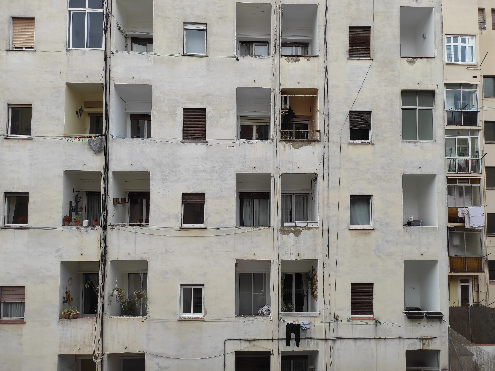

Catalunya was a "come-back-home". I lived one year in Barcelona doing bartendering jobs and I haven't been back ever since. The initial plan of '22 was to go to Mexico or Colombia but I had to postpone the trip because travelling guidelines were still not clear after the pandemic and to be honest I was also short of money. Therefore I decided for Catalunya and instead of visiting only Barcelona, this time I added some extra stations to my journey (Sitges, Girona, Tarragona) where I had the chance to hike in the beginning of the Pyrenees region, despite February cold weather that left me one night freezing in a bed with high fever.
Montjuic and Tibidabo were inspiring as usual although my mind was often going elsewhere, mostly thinking about the beginning of the conflict in Ukraine that happened in those days. For the rest of the time, I tried to get the best out of my journey and enjoy the simple pleasure of walking. I have also visited the bar where I used to work called Merbeyé and had few pints with the bartender who's currently running the place. Certain places never changes and are able to keep their identity during the years. Merbeyé is a nice cozy bar. It used to be part of the jazz scene of Barcelona but I think nowadays is mostly a place where locals and tourists coming down from Tibidabo amusement park like to stop for a drink and there is not much live music going on anymore.
As travel book, I brought back a novelist that I red previously during my studies in UK, Gabriel Garcia Marquez. "Hundred Years of Solitude" is a masterpiece of the literature of the twenty century, a must-read, a main reference of colombian magical realism and many more other things at the same time. The book talks about many topic, colonialism, progress, war, economy and family relations and it covers the life of seven generations of people in their struggle to survive.
**Maria Arnal i Marcel Bages,Clamor///Leiva, A ti te ocurre algo "Nos conocimos el dia que murio Gabo Garcia Marquez"**